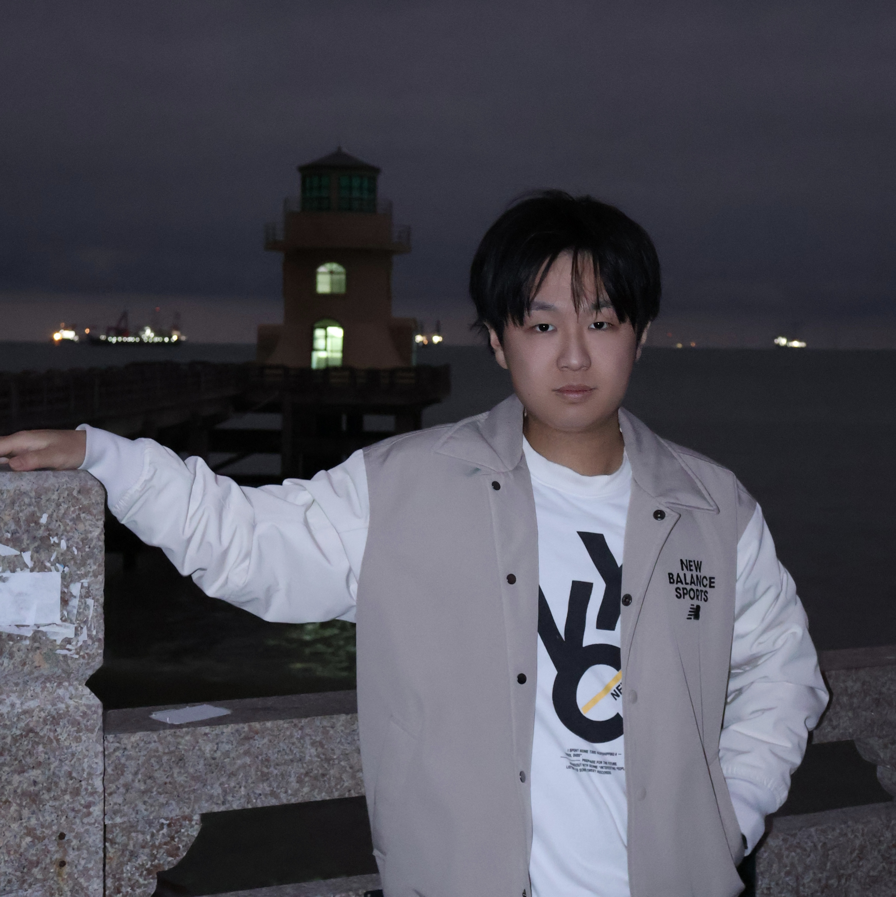
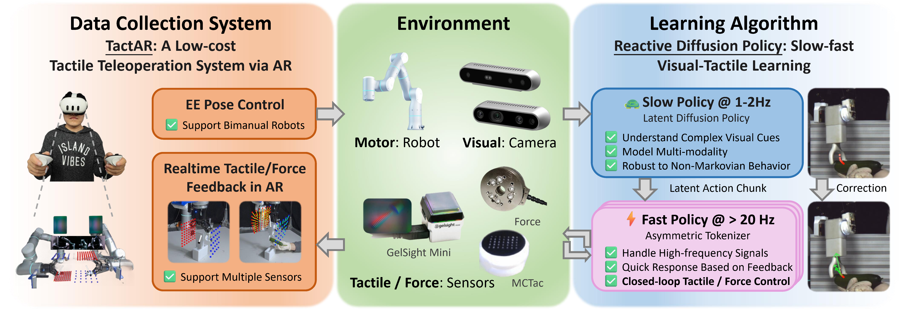
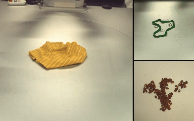
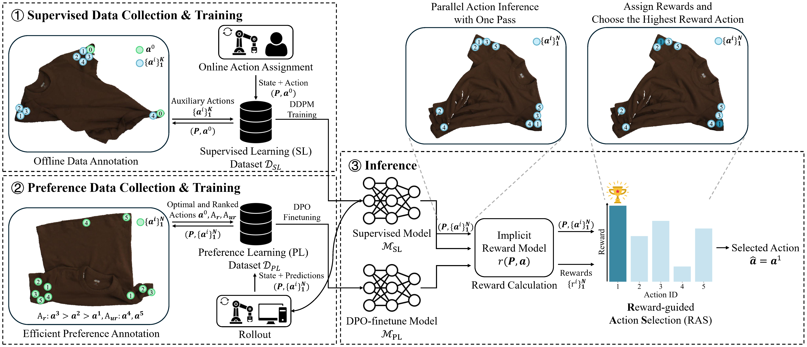

|
Wendi Chen | 陈文迪 I'm a Computer Science Ph.D. student at Shanghai Jiao Tong University (SJTU) supervised by Prof. Cewu Lu (卢策吾). I'm a member of Machine Vision and Intelligence Group (MVIG). Before that, I received my B.E. degree of Computer Science at SJTU. My research interests focus on Embodied AI. Specifically, I am interested in how to extend robotic manipulation to a wider range of tasks, such as those involving deformable objects, contact-rich interactions, and dexterous tasks, by improving hardware, data, and algorithms. I'm always open to meeting people from diverse backgrounds. If you're interested in my research or just want to chat, free feel to reach out to me via Email or WeChat. Email / WeChat / Github / Twitter (X) |
 |
{kind=link}
News |
PublicationsRepresentative papers are highlighted. |


|
Reactive Diffusion Policy: Slow-Fast Visual-Tactile Policy Learning for Contact-Rich Manipulation
Han Xue*, Jieji Ren*, Wendi Chen*, Gu Zhang\( \dagger \), Yuan Fang\( \dagger \), Guoying Gu, Huazhe Xu\( \ddagger \), Cewu Lu\( \ddagger \) (*equal contributions, \( \dagger \)equal contributions, \( \ddagger \)equal advising) arXiv, 2025 project page / paper / arXiv / tweet / bibtex We propose TactAR and Reactive Diffusion Policy (RDP). TactAR is a teleopration system that uses AR to provide tactile / force feedback. RDP is a slow-fast policy learning method which enables closed-loop tactile / force control via fast policy while maintaining the capability of modeling complex action distributions via slow policy. |
|


|
DeformPAM: Data-Efficient Learning for Long-horizon Deformable Object Manipulation via Preference-based Action Alignment
Wendi Chen*, Han Xue*, Fangyuan Zhou, Yuan Fang, Cewu Lu (*equal contributions) International Conference on Robotics and Automation(ICRA), 2025 project page / paper / arXiv / tweet / code / video / bibtex Inspired by RLHF, DeformPAM enhances learning efficiency and mitigates distribution shift in deformable object manipulation by selecting action through a preference-based implicit reward model. |
Selected Awards and Honors
|
|
The website template is from Jon Barron. |